Base de datos
🔑 clave primaria · → clave foránea

Consola de investigación
Escribí tu consulta SQL mirando el diagrama de la izquierda y ejecutala para revisar las pistas.

¿Podés descubrir quién lo hizo?
Ha habido un asesinato en SQL City el 15 de enero de 2018. Tenés acceso completo a la base de datos de la policía. Cruzá reportes, testimonios y registros hasta encontrar a la persona responsable.
🔑 clave primaria · → clave foránea
Escribí tu consulta SQL mirando el diagrama de la izquierda y ejecutala para revisar las pistas.
Escribí el nombre completo de la persona que apretó el gatillo.
Esta base de datos se consulta con SQL, un lenguaje para pedirle información a una base de datos. Acá tenés varias formas de buscar y combinar datos, cada una con una captura real de cómo se ve al ejecutarla en la consola. Podés adaptar cualquiera de estos ejemplos cambiando el nombre de la tabla, la columna o el valor que buscás.
Para elegir qué filas te interesan: por un valor exacto, una lista de valores, un rango numérico o un patrón de texto.
Escribí SELECT * FROM seguido del nombre de la tabla. El asterisco (*) significa "todas las columnas". Como las tablas pueden tener miles de filas, agregá LIMIT y un número para ver solo unas pocas.
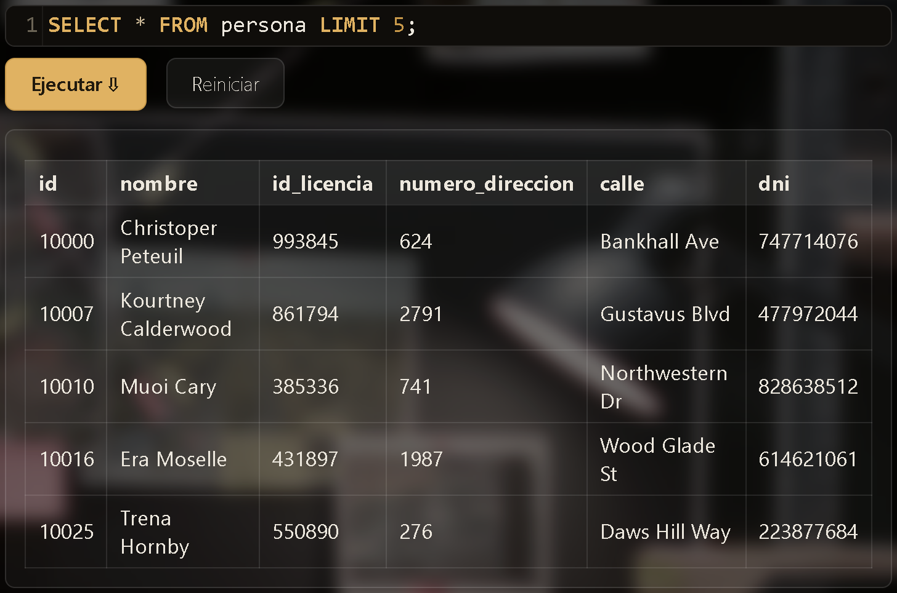
La cláusula WHERE filtra los resultados según una condición. El texto va entre comillas simples (') y tiene que coincidir exactamente, mayúsculas incluidas.
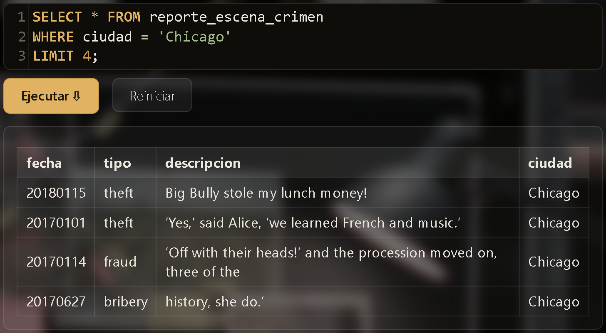
En vez de repetir la misma columna con OR muchas veces, usá IN con una lista de valores entre paréntesis.
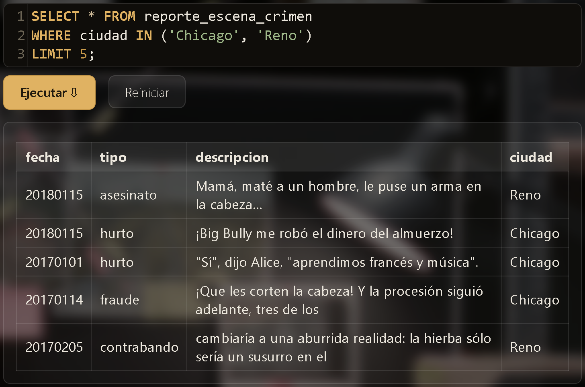
Con columnas numéricas podés usar >, < o BETWEEN valor1 AND valor2 para buscar un rango de valores.
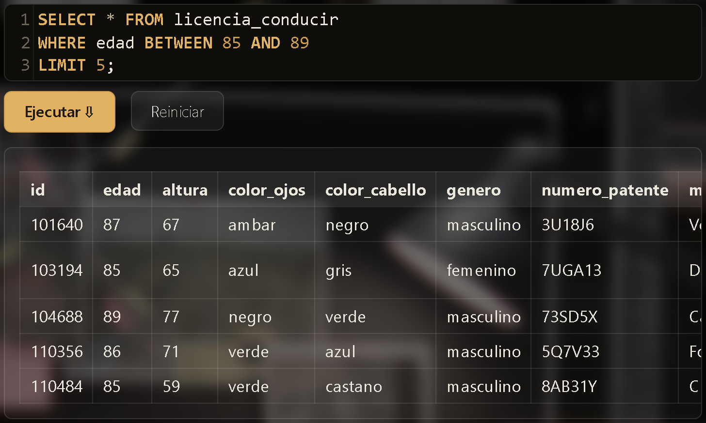
Usá LIKE en vez de =, con el símbolo % como comodín. % significa "cualquier cosa (o nada) acá". 'Mar%' encuentra todo lo que empieza con "Mar".
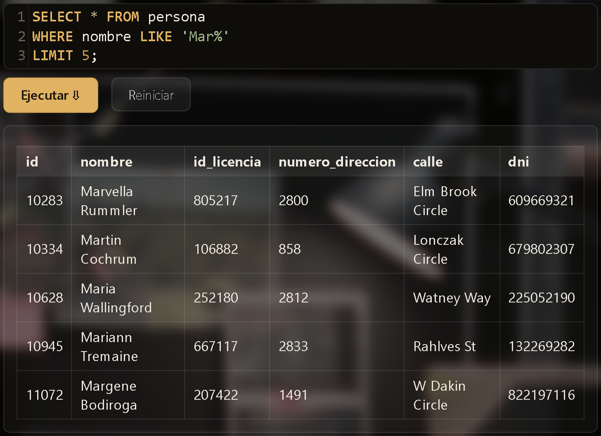
Poniendo % de los dos lados, '%Erickson%' encuentra cualquier nombre que contenga "Erickson" en cualquier posición, no solo al principio.
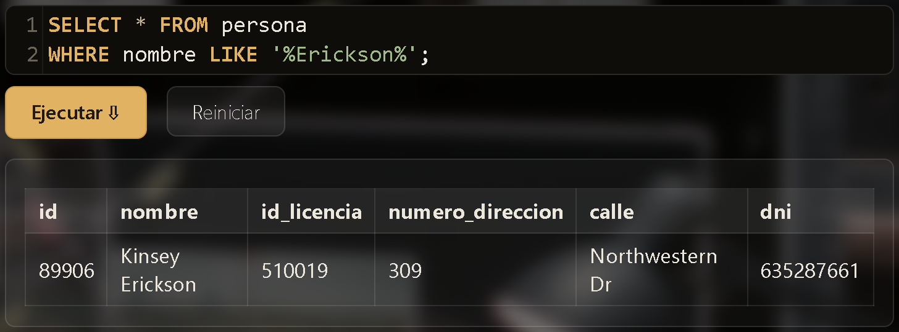
Para combinar varias condiciones, o traer columnas de varias tablas (o consultas) a la vez.
Si con que se cumpla cualquiera de dos condiciones ya te sirve, unilas con OR en vez de AND.
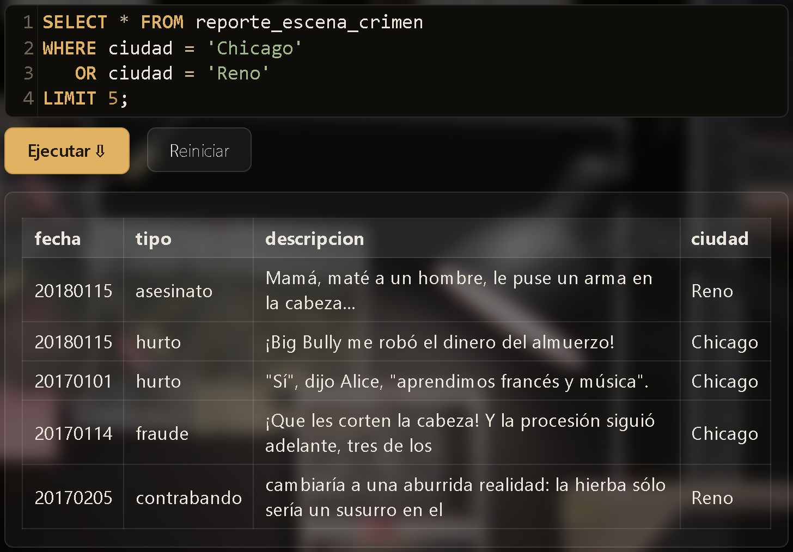
Si necesitás que se cumplan dos condiciones al mismo tiempo, unilas con AND.
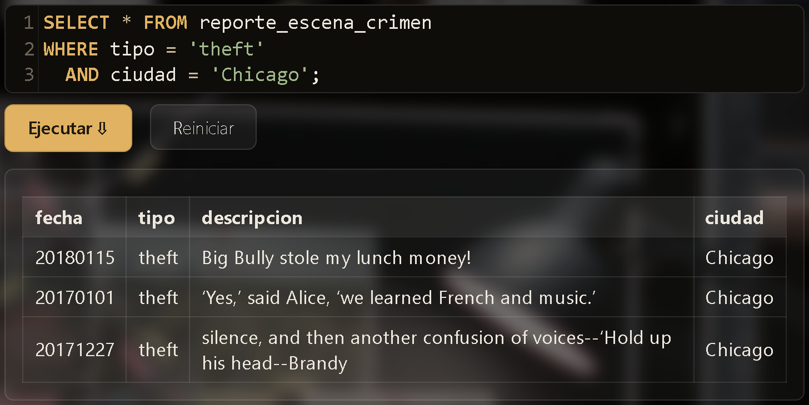
Los datos del caso están repartidos en varias tablas conectadas entre sí (mirá las flechas del diagrama). JOIN combina dos tablas en una sola consulta, indicando con ON qué columnas las conectan.
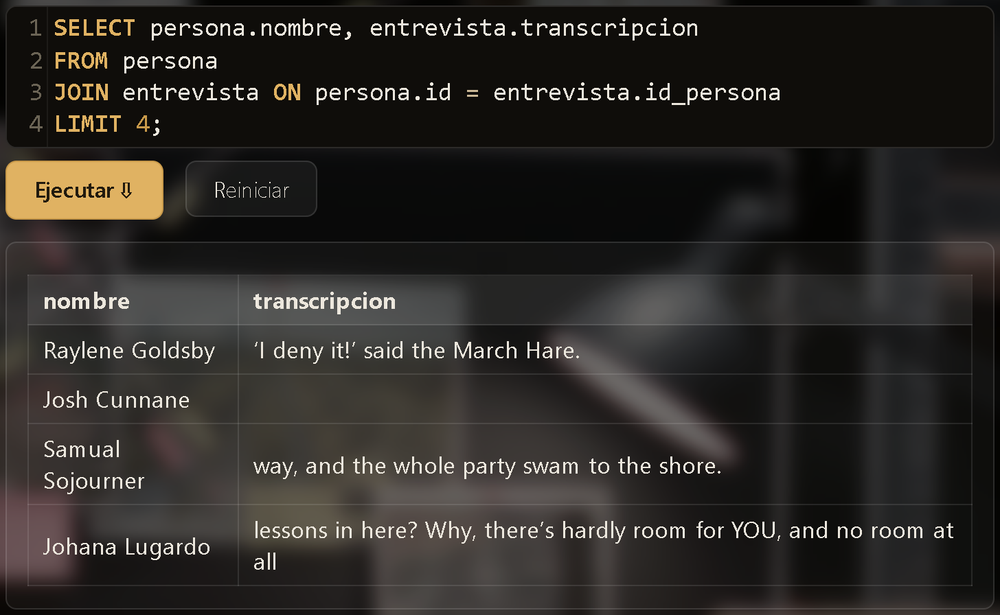
Podés encadenar más de un JOIN para traer columnas de varias tablas relacionadas en la misma consulta.
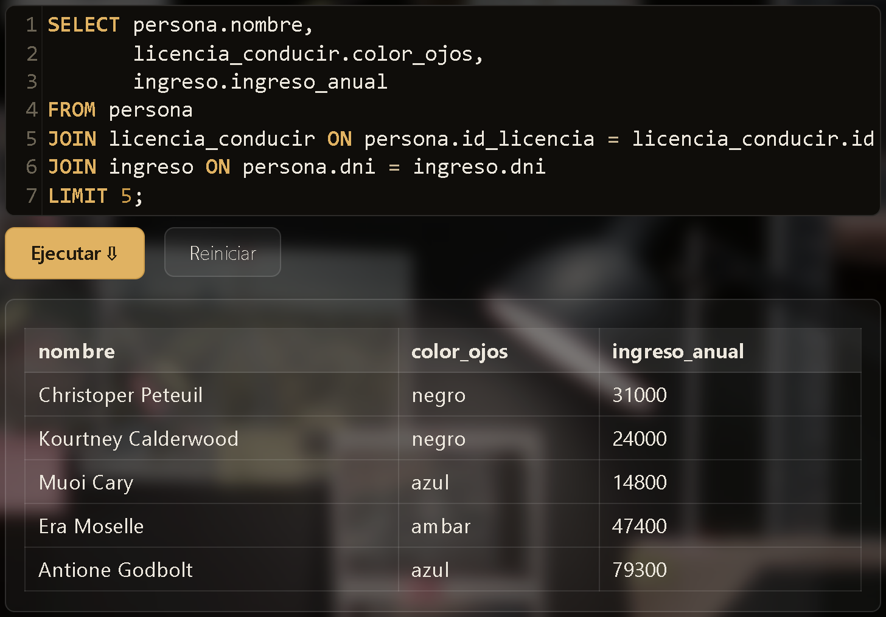
Para ordenar los resultados, o resumirlos con funciones como contar, sumar o promediar.
ORDER BY ordena los resultados según una columna. Agregá DESC para ir de mayor a menor, o ASC (el orden por defecto) para ir de menor a mayor.
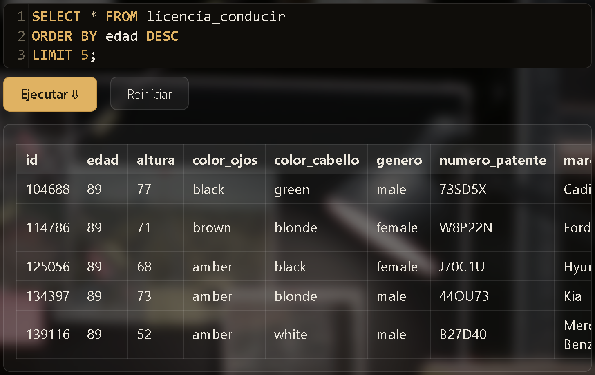
COUNT(*) cuenta filas. MIN, MAX, AVG y SUM hacen lo mismo con el mínimo, máximo, promedio y suma de una columna numérica. Podés combinar varias en una sola consulta.
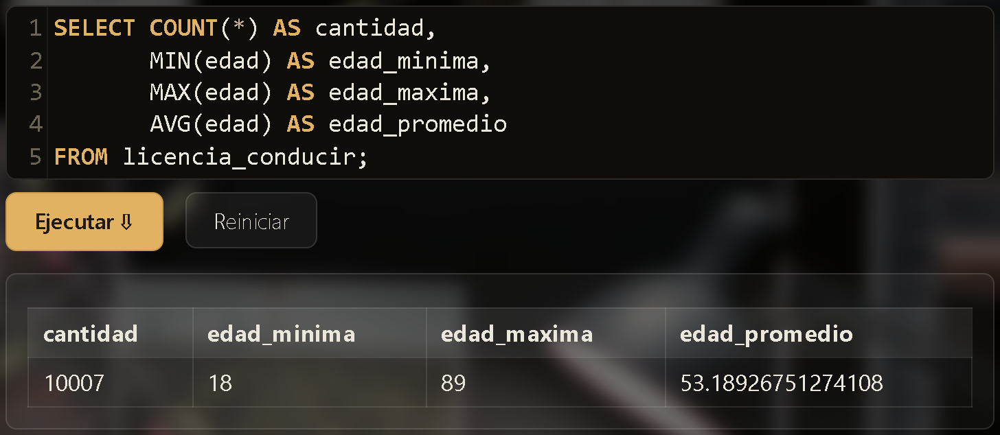
Un paso más avanzado, para cuando ya tenés las herramientas de arriba controladas.
Cuando el dato que buscás en una tabla depende de una condición sobre otra tabla, poné esa segunda consulta entre paréntesis después de IN. Primero se resuelve la consulta de adentro, y el resultado se usa como lista de valores para la de afuera.
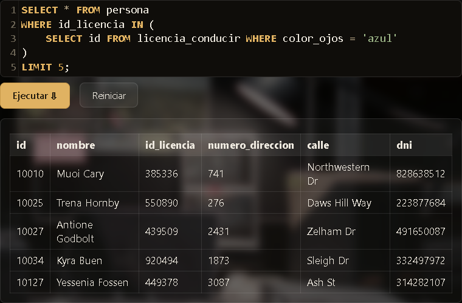
GROUP BY agrupa las filas que comparten un mismo valor (por ejemplo, todos los eventos de una misma persona) para poder contarlas o combinarlas con COUNT, SUM, etc. Para filtrar esos grupos según el resultado de esa cuenta, usá HAVING en vez de WHERE.
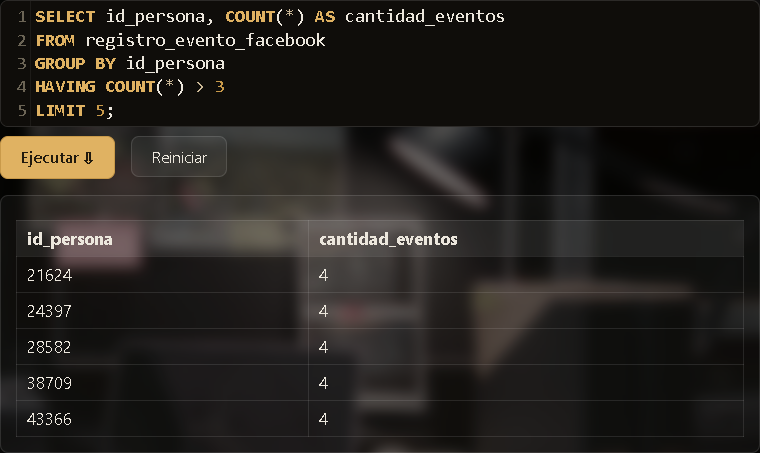
3">No se encontraron resultados para tu búsqueda.